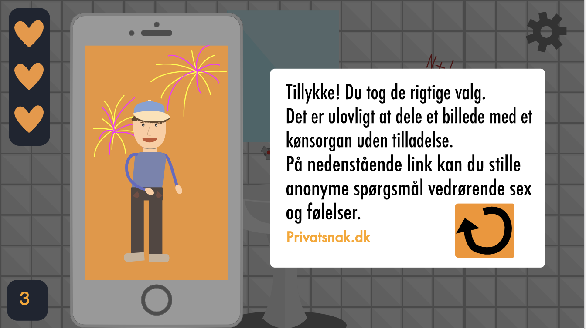
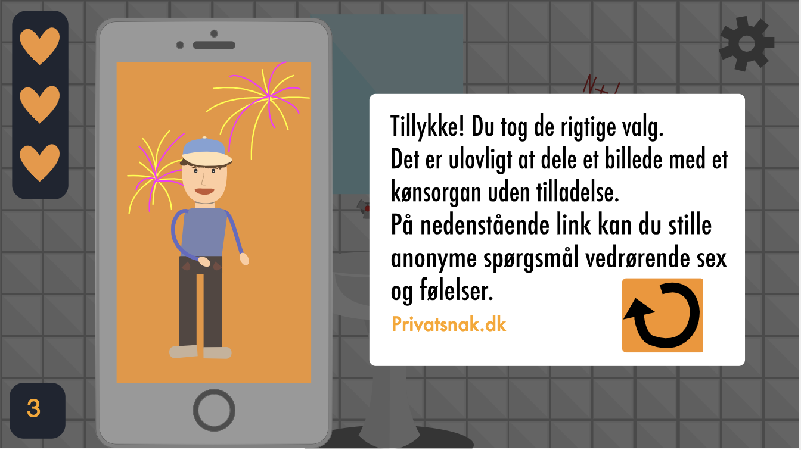

I dette projekt blev vi introduceret til interaktive animationer og design i vektorgrafik.
Formål:
At forstå og få erfaring med animationsteknikker både visuelt og teknisk.
At få forståelse for og erfaring med implementering af animationsteknikker på websites.
Proces:
Vi lærte i dette forløb om JavaScript og CSS animationer og om hvordan man laver interaktive animationer på websider samt hvordan de bliver implementeret.
Vi lærte om de 12 animationsprincipper og hvordan former kan påvirke en karakters udstråling, hvorfor de onde karakterer i mit spil har mere skarpe kanter og de gode karakterer har bløde former.
Vi designede vores karakterer i illustrator, da vector grafik er den bedste til animationer.
Før jeg begyndte at kode lavede jeg et aktivitetsdiagram til at beskrive det interaktive system jeg ønskede i mit spil. Udover dette lavede jeg et State Machine Diagram som samlede de aktiviteter jeg ønskede i mine states. Disse diagrammer hjalp mig til hvordan min kode skulle skrives og gjorde det samtidig lettere for mig at bevare overblikket.
I den tidlige fase af opgaven lavede jeg skitser, et moodboard samt et styletile. Dette gjorde det lettere for mig at påbegynde mine design i Adobe Illustrator og klarlagde min ønskede stil.
Mine karakterer i spillet blev eksporteret som SVG-filer. SVG-filer er lavet i vektorformat og er bl.a. det bedste at bruge til spil, da de kan animeres og skaleres uden at det mister kvalitet.
Refleksion:
Jeg fandt dette forløb spændende men også meget udfordrende. JavaScript var for mig en del udfordrende, hvorfor elementer i mit spil ikke er fyldestgørende. F.eks. Har jeg ikke gjort brug af den rigtig kode under 'reset'. Jeg ville gerne have gjort mere ud af mit design og revurderet mine farvevalg, men grundet intensiteten og tidspresset i det nye forløb fik jeg ikke gjort dette.
Programmer brugt:
- Adobe Illustrator
- Brackets
- FileZilla
- Git - Github.com

 
